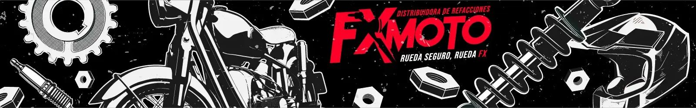

Elige dónde vas a revisar
En la versión operativa se elegirá o escaneará la etiqueta del nivel. Aquí usamos dos niveles ficticios para probar el recorrido.

No cambia el acomodo ni el inventario. Los borradores se guardan solo en este navegador; no se envían a oficina.
Primero revisamos. La mercancía se mueve después, con una ubicación aprobada.
En la versión operativa se elegirá o escaneará la etiqueta del nivel. Aquí usamos dos niveles ficticios para probar el recorrido.
Si A ocupa también B y C, ese tramo está ocupado aunque B y C no tengan su producto.
El encargado asigna un pasillo a cada almacenista. Varias personas pueden trabajar al mismo tiempo en pasillos distintos; cada quien revisa su pasillo rack por rack y nivel por nivel.
Cuenta un código y captura sus cantidades de inmediato. Después mide y registra cada tramo, comprueba los huecos y toma la foto. Revisa y guarda antes de avanzar. Si te interrumpen, guarda el borrador y anota en observaciones el rack, el nivel y qué falta; compruébalo al retomar. Revisa también lo que quedó recargado afuera. Al terminar el pasillo, avisa al encargado para revisar los registros y recibir el siguiente pasillo.
Abrir guía ilustrada PDF ↗Incluye todos los códigos que están físicamente en este nivel, aunque su etiqueta diga otro lugar.
Usa centímetros. El punto 0 está en el borde interior izquierdo del nivel.
Mide entre los postes y hasta la repisa superior. Descuenta obstáculos. No uses la medida exterior del rack.
Vista frontal orientativa. Solo se consideran libres los huecos continuos; el espacio encima o detrás de mercancía no se ofrece automáticamente.
Mide desde el mismo borde izquierdo hasta el inicio y el final de cada grupo. Incluye cajas, salientes y la mercancía de al lado.
Si un código está en dos grupos, agrega un tramo por grupo usando el mismo código. Los tramos que se superponen se cuentan una sola vez.
Sin esta revisión, el espacio queda “Por verificar”. Un conteo cero o una etiqueta sin producto no lo convierte en libre.
De frente, con ambos extremos y las etiquetas visibles. Describe en observaciones dónde quedó lo de afuera.
Esta prueba no asigna lugares ni autoriza movimientos.
Para cada código que no cabe, comprobar el espacio necesario para todas sus piezas juntas: ancho, fondo, alto, forma de apilar y capacidad del rack. La cantidad por sí sola no demuestra que cabrá.
El encargado puede ampliar su ubicación actual o proponer otra. Las etiquetas de posiciones absorbidas se actualizan al aprobar el cambio. El origen solo se libera después de confirmar el traslado completo.
No está conectada a Google Sheets ni se comparte entre celulares. Una dirección sin enlace en el menú no es privada: quien tenga el enlace puede abrir esta demostración.